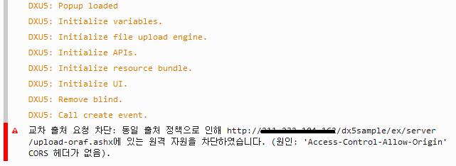
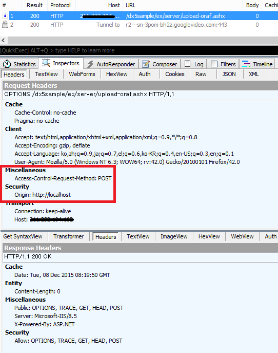
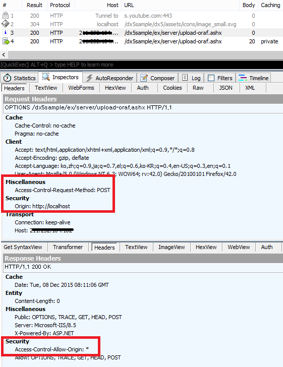

Cross-Origin Resource Sharing(CORS)
DEXTUploadX5 멀티 모듈은 순수 웹기술만을 사용하여 파일을 업로드하는 기능을 제공합니다.
파일을 업로드하기 위해서 Ajax 기술을 사용하며, 이때 XmlHttpRequest API가 사용됩니다. 그런데 Ajax 기술을 사용하여 GET 또는 POST 요청을 할 때, 도메인이 다르면 요청을 보내지 못하는 문제가 발생합니다. 이는 Same Origin Policy라는 정책 때문인데, 현재 브라우저에서 보이는 페이지를 내려받은 Origin에서만 Ajax 요청이 가능하기 때문입니다.
즉 제품에서 파일 업로드를 하려할 때, 타 Origin으로는 업로드가 불가능해집니다.
CORS는 Cross-Origin Resource Sharing 앞 글자를 따서 만든 약어로써 W3C에 정의된 인터넷 용어입니다.
"User agents commonly apply same-origin restrictions to network requests. These restrictions prevent a client-side Web application running from one origin from obtaining data retrieved from another origin, and also limit unsafe HTTP requests that can be automatically launched toward destinations that differ from the running application's origin."
Origin이란 스키마, 도메인, 서브 도메인, 포트가 다른 것들도 다른 origin으로 간주합니다. CORS는 W3C에서 서도 다른 Origin 간에 요청을 주고받을 수 있는 방법을 표준화한 것입니다. 요청을 받는 서버의 입장에서 허락을 하면 Ajax 통신을 할 수 있도록 응답 헤더를 구성하는 것이 CORS입니다. 요청이 왔을 때, 서버는 Access-Control-Allow-Origin 응답 헤더를 설정하여 클라이언트 보냅니다. 클라이언트는 서버로부터 받은 Access-Control-Allow-Origin 응답 헤더를 분석하여 요청이 허용되었다면, 다음 통신을 진행하며 그렇지 않다면 요청이 중단됩니다.
다음 이미지는 CORS가 적용되지 않았을 때 콘솔(Firefox)에 기록된 오류 정보입니다.

localhost로 서비스하는 페이지에서 다른 서비스로 업로드할 때 업로드가 실패하며, 콘솔에 오류 내용이 기록되었습니다.
피들러 프로그램을 사용하여 서버와 주고 받는 대화를 살펴보면, Origin이 다를 경우 바로 POST로 파일 업로드를 시작하는 것이 아니라, OPTIONS 요청을 합니다. (preflight)
서버는 CORS가 설정되어 있지 않으므로, Access-Control-Allow-Origin 응답 헤더를 받지 못합니다. Access-Control-Allow-Origin 응답 헤더를 받지 못한 Ajax API는 POST 요청을 보내지 못하고 실패되고 맙니다.

서버에 CORS가 적용한 후는 파일 업로드가 성공하며, 다음과 같은 대화를 확인할 수 있습니다.
"Access-Control-Allow-Origin: *"는 클라이언트 요청을 허락함을 의미합니다. 이는 Cross-Origin 요청을 허락한 것이므로 Ajax API는 바로 업로드 작업(POST)을 시작하게 됩니다.

CORS는 CORS를 지원하는 브라우저가 필요로 하며, 응답 헤더 설정은 전적으로 서버 혹은 서버 코드에서 설정해야 하는 부분이므로 DEXTUploadX5 제품 차원에서 CORS를 설정하는 방법은 없습니다.
CORS를 설정하면 보안에 취약할 수 있으므로, Same-Origin Policy 정책을 그대로 사용하는 것을 권장합니다.
DEXTUploadX5는 도메인 라이선스를 사용하며, 종류에 따라 최대 8개까지 호스트가 다른 서비스를 허용하고 있습니다. 그러나 CORS 미설정으로 인하여 파일이 업로드 혹은 다운로드가 안되는 현상이 발생하는 것은 라이선스 인증에 영향을 받는 것이 아닙니다. 그러므로 다수의 서비스(호스트가 다른)을 사용할 수 있는 라이선스를 구매했다 하더라도 각 서비스 별로 CORS 설정은 직접 해주셔야 합니다.
enable-cors 사이트는 CORS를 설정하는 여러 방법들이 설명되어 있으므로 참고하시길 바랍니다.